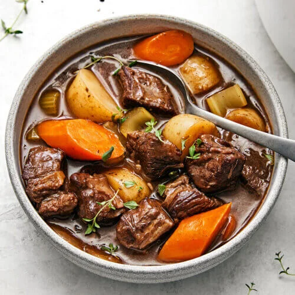

Beef Stew

Description
A classic beef stew slow cooked in a wine based broth best served with atrisan bread and mash potatoes.
This stew is mostly hands off and freezes perfectly making it a delicious pre-made meal option
Ingredients
- 3 pounds of boneless beef chuck cut into 1½ pieces
- 2 teaspoons of salt
- 1 teaspoon of grounded black pepper
- 3 tablespoons of olive oil
- 2 medium yellow onions cut into 1-inch chunks
- 7 cloves of garlic, peels and smashed
- 2 tablespoons of balsamic vinegar
- 1½ tablespoons of tomato paste
- ¼ of all-purpose flour
- 2 cups of dry red wine
- 2 cups of beef broth
- 2 cups of water
- 1 bay leaf
- ½ teaspoon of dried thyme
- 1½ teaspoons of sugar
- 4 large carrots, peeled and cut into 1-inch chunks on a diagonal
- 1 pound of small white boiling potatoes cut in half
- fresh chopped parsley (optional)
Steps
- Trim the meat: Cut large spots of fat but don't overdue it as some fat is necessary.
- Season: Generously sprinkle salt and pepper onto the meat.
- Sear the beef: Heat some oil in a large pot and brown the meat in batches and avoid over crowding.
- Add aromatics, vinegar and tomato paste: Remove meat and add onions, garlic and balsamic vinegar.
Cook until vegetables soften before adding tomato paste and cooking for an additional minute. Bring to a boil, cover and then braise for 2 hours.
- Return meat and add flour: Stir for 1-2 minutes or until flour is dissolved.
- Add cooking liquid and seasoning: Add wine, broth, water, thyme, bay leaves, and sugar.
- Add vegetables: Remove pot from oven, then add carrots and potatoes.
- Finish cooking: Return stew to the oven for an additional hour. Cook until the meat and vegetables are tender and the both has thickened.
Home